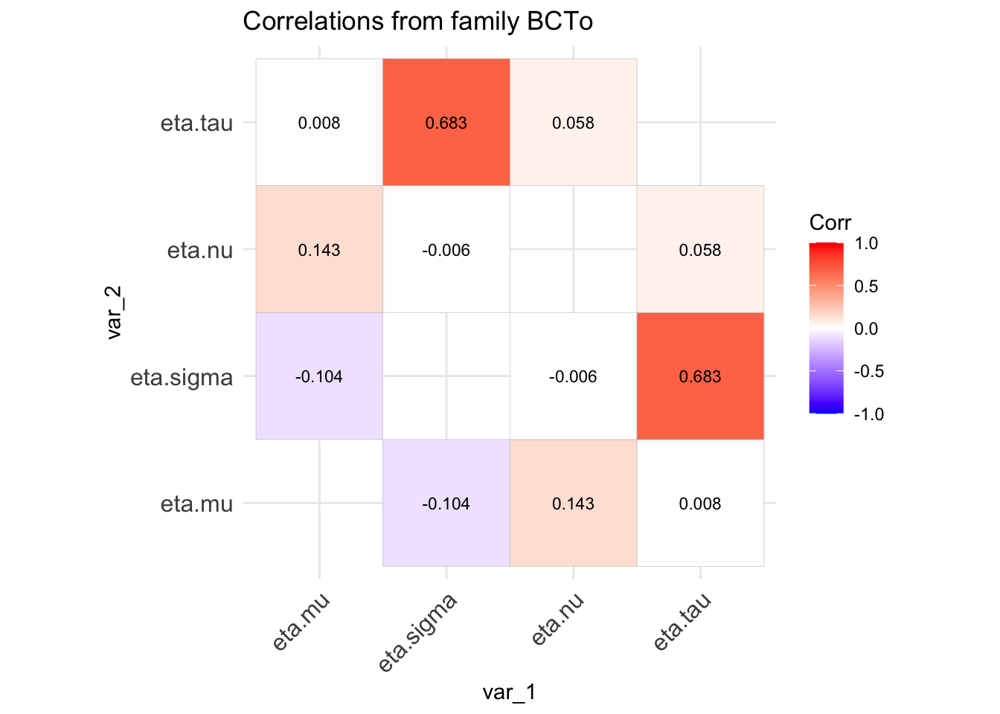
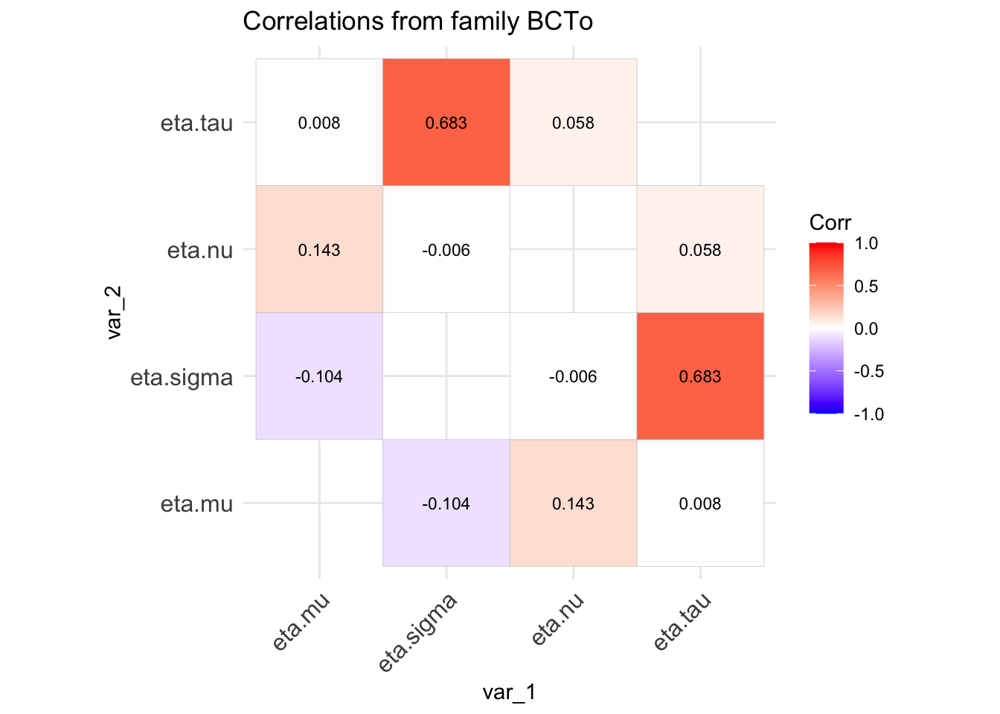
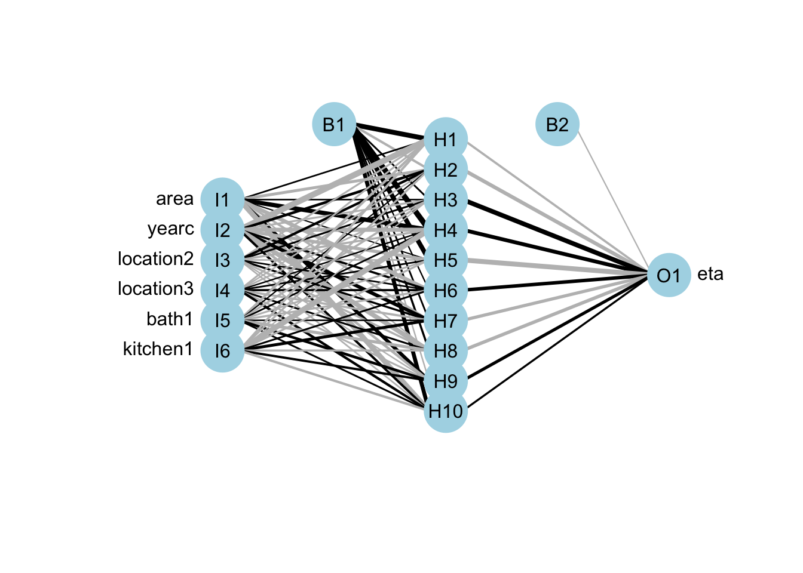
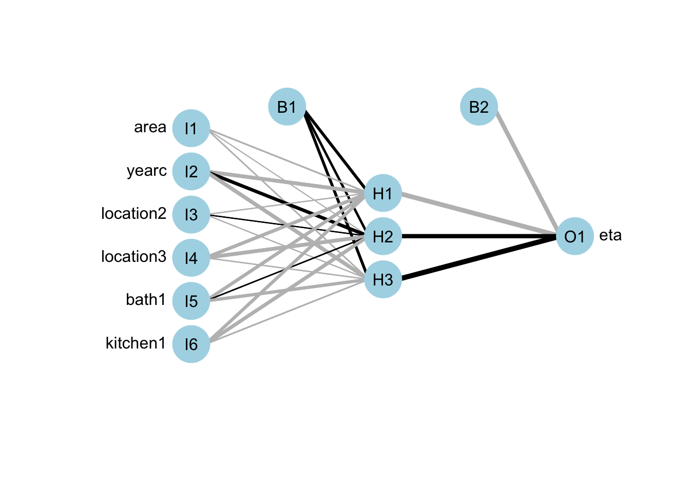

source("~/Dropbox/GAMLSS-development/ggplot/family_cor.R")
library(gamlss)
library(ggplot2)
family_cor("BCTo", mu=1, sigma=0.11, nu=1, tau=5, no.sim=10000)
Mikis Stasinopoulos
Bob Rigby
Gillian Heller
Fernanda De Bastiani
Niki Umlauf
The code below shows how to create a correlation coefficient table for the parameters of the BCTo distribution. It generates 10000 obstbations from the BCTo distribution at given values for \mu, \sigma, \nu and \tau them fits a model and plots the empirical correlation matrix of the parameters.
source("~/Dropbox/GAMLSS-development/ggplot/family_cor.R")
library(gamlss)
library(ggplot2)
family_cor("BCTo", mu=1, sigma=0.11, nu=1, tau=5, no.sim=10000)
Try different values for \mu, \sigma, \nu and \tau for the BCTo distribution
Try different distribution i.e SHASH
Fit the
described in the slides.
library(gamlss2)
library(gamlss.ggplots)
library(gamlss.prepdata)
rent99 |> data_rm( c(2,9)) |>
data_few2fac() -> da**************************************************************
rent area yearc location bath kitchen cheating
2723 132 68 3 2 2 2
**************************************************************
4 vectors with fewer number of values than 10 were transformed to factors
**************************************************************
************************************************************** mlinear <- gamlss2(rent~area+poly(yearc,2)+location+bath+kitchen+
cheating|area+yearc+location+bath+kitchen+cheating,
family=BCTo, trace=FALSE, data=da)
summary(mlinear)Call:
gamlss2(formula = rent ~ area + poly(yearc, 2) + location + bath +
kitchen + cheating | area + yearc + location + bath + kitchen +
cheating, data = da, family = BCTo, ... = pairlist(trace = FALSE))
---
Family: BCTo
Link function: mu = log, sigma = log, nu = identity, tau = log
*--------
Parameter: mu
---
Coefficients:
Estimate Std. Error t value Pr(>|t|)
(Intercept) 5.0132864 0.0275445 182.007 < 2e-16 ***
area 0.0106293 0.0002329 45.640 < 2e-16 ***
location2 0.0878750 0.0104118 8.440 < 2e-16 ***
location3 0.1983303 0.0383017 5.178 2.39e-07 ***
bath1 0.0415152 0.0206509 2.010 0.0445 *
kitchen1 0.1129557 0.0236130 4.784 1.80e-06 ***
cheating1 0.3304758 0.0240475 13.743 < 2e-16 ***
poly(yearc, 2)1 5.0471663 0.3301520 15.287 < 2e-16 ***
poly(yearc, 2)2 3.3575299 0.2751069 12.204 < 2e-16 ***
*--------
Parameter: sigma
---
Coefficients:
Estimate Std. Error t value Pr(>|t|)
(Intercept) 1.047e+01 6.245e-02 167.650 < 2e-16 ***
area 1.218e-03 6.099e-04 1.996 0.0460 *
yearc -5.972e-03 8.078e-07 -7392.764 < 2e-16 ***
location2 5.971e-02 2.911e-02 2.051 0.0403 *
location3 2.176e-01 9.224e-02 2.359 0.0184 *
bath1 5.069e-03 5.966e-02 0.085 0.9323
kitchen1 3.750e-02 7.106e-02 0.528 0.5977
cheating1 -2.431e-01 4.766e-02 -5.100 3.6e-07 ***
*--------
Parameter: nu
---
Coefficients:
Estimate Std. Error t value Pr(>|t|)
(Intercept) 0.65342 0.05454 11.98 <2e-16 ***
*--------
Parameter: tau
---
Coefficients:
Estimate Std. Error t value Pr(>|t|)
(Intercept) 3.18974 0.01758 181.4 <2e-16 ***
---
Signif. codes: 0 '***' 0.001 '**' 0.01 '*' 0.05 '.' 0.1 ' ' 1
*--------
n = 3082 df = 19 res.df = 3063
Deviance = 38254.617 Null Dev. Red. = 5.95%
AIC = 38292.617 elapsed = 0.31secmadditive <- gamlss2(rent~s(area)+s(yearc)+location+bath+kitchen+
cheating|s(area)+s(yearc)+location+bath+kitchen+cheating,
family=BCTo, data=da, trace=F)
GAIC(mlinear, madditive) AIC df
madditive 38196.95 32.2364
mlinear 38292.62 19.0000Call:
gamlss2(formula = rent ~ s(area) + s(yearc) + location + bath +
kitchen + cheating | s(area) + s(yearc) + location + bath +
kitchen + cheating, data = da, family = BCTo, ... = pairlist(trace = F))
---
Family: BCTo
Link function: mu = log, sigma = log, nu = identity, tau = log
*--------
Parameter: mu
---
Coefficients:
Estimate Std. Error t value Pr(>|t|)
(Intercept) 5.71524 0.02082 274.541 < 2e-16 ***
location2 0.08808 0.01102 7.994 1.83e-15 ***
location3 0.20998 0.04965 4.229 2.41e-05 ***
bath1 0.05792 0.04280 1.353 0.17605
kitchen1 0.10859 0.03642 2.982 0.00289 **
cheating1 0.34594 0.02021 17.114 < 2e-16 ***
---
Smooth terms:
s(area) s(yearc)
edf 6.6271 6.4275
*--------
Parameter: sigma
---
Coefficients:
Estimate Std. Error t value Pr(>|t|)
(Intercept) -1.15569 0.03695 -31.277 < 2e-16 ***
location2 0.05293 0.02264 2.338 0.0195 *
location3 0.21218 0.08616 2.463 0.0138 *
bath1 0.03440 0.08318 0.414 0.6792
kitchen1 0.01861 0.07591 0.245 0.8063
cheating1 -0.23431 0.03754 -6.242 4.91e-10 ***
---
Smooth terms:
s(area) s(yearc)
edf 1.1077 4.0742
*--------
Parameter: nu
---
Coefficients:
Estimate Std. Error t value Pr(>|t|)
(Intercept) 0.69275 0.04548 15.23 <2e-16 ***
*--------
Parameter: tau
---
Coefficients:
Estimate Std. Error t value Pr(>|t|)
(Intercept) 3.26960 0.07549 43.31 <2e-16 ***
---
Signif. codes: 0 '***' 0.001 '**' 0.01 '*' 0.05 '.' 0.1 ' ' 1
*--------
n = 3082 df = 32.24 res.df = 3049.76
Deviance = 38132.48 Null Dev. Red. = 6.25%
AIC = 38196.9528 elapsed = 0.48secf <- rent ~ n(~area+yearc+location+bath+kitchen, size=10)| n(~area+yearc+location+bath+kitchen, size=3)
mneural <- gamlss2(f,family=BCTo, data=da)Loading required namespace: nnetGAMLSS-RS iteration 1: Global Deviance = 38207.0928 eps = 0.289906
GAMLSS-RS iteration 2: Global Deviance = 38173.117 eps = 0.000889
GAMLSS-RS iteration 3: Global Deviance = 38164.1525 eps = 0.000234
GAMLSS-RS iteration 4: Global Deviance = 38161.8465 eps = 0.000060
GAMLSS-RS iteration 5: Global Deviance = 38160.1274 eps = 0.000045
GAMLSS-RS iteration 6: Global Deviance = 38159.1637 eps = 0.000025
GAMLSS-RS iteration 7: Global Deviance = 38158.2825 eps = 0.000023
GAMLSS-RS iteration 8: Global Deviance = 38157.9348 eps = 0.000009 AIC df
madditive 38196.95 32.2364
mlinear 38292.62 19.0000
mneural 38377.93 110.0000
mregtree 38754.64 30.0000source("~/Dropbox/GAMLSS-development/nnet/plot_NN.R")
plot(specials(mneural, model = "mu", elements = "model"))

f <- rent ~ cf(~area+yearc+location+bath+kitchen)| cf(~area+yearc+location+bath+kitchen)
mcf <- gamlss2(f,family=BCTo, data=da)Loading required namespace: partykitGAMLSS-RS iteration 1: Global Deviance = 38472.7742 eps = 0.284968
GAMLSS-RS iteration 2: Global Deviance = 38318.7632 eps = 0.004003
GAMLSS-RS iteration 3: Global Deviance = 38313.3108 eps = 0.000142
GAMLSS-RS iteration 4: Global Deviance = 38311.9149 eps = 0.000036
GAMLSS-RS iteration 5: Global Deviance = 38311.2696 eps = 0.000016
GAMLSS-RS iteration 6: Global Deviance = 38311.2646 eps = 0.000000